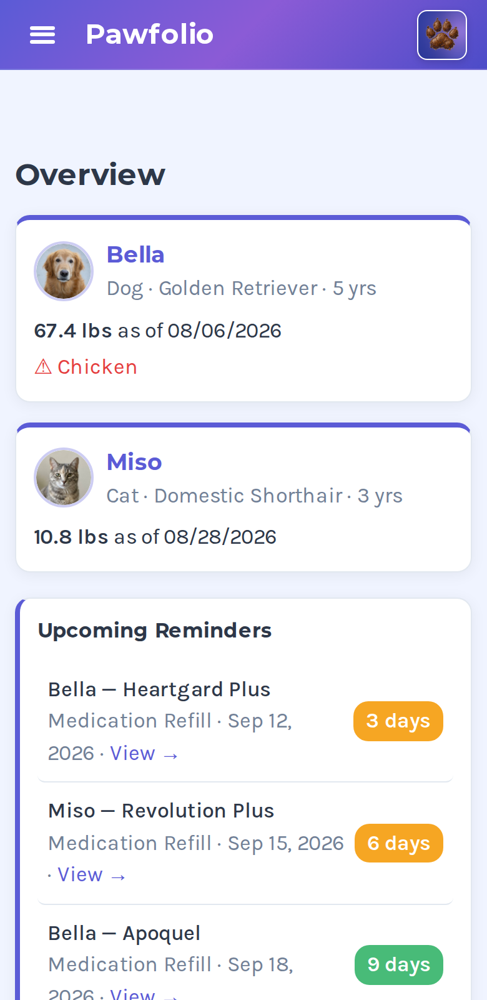
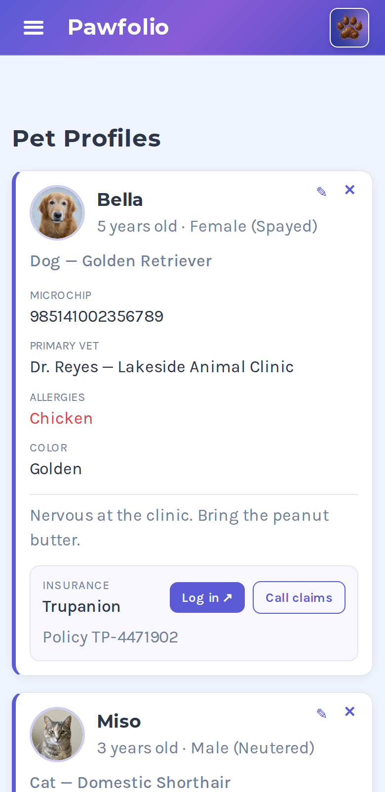

Pawfolio — for pet owners
Could you answer these 6 questions about your pet?
Your vet asks every one of them. Six questions, one point each — then we’ll show you where each answer lives.
-
01
When was the last vaccination?
Every due date, with the next one already worked out.
-
02
Which medication, and what dose?
Current medications and supplements per pet.
-
03
What was the weight at the last visit?
A weight history you can actually see a trend in.
-
04
What was the diagnosis last time?
Every visit, reason, diagnosis and what it cost.
-
05
When was the last flea and tick dose?
Logged with the rest, not in your head.
-
06
What is the microchip number?
On the profile, ready to read out.
The demo is the whole app with a sample pet loaded, so you can open every tab and try anything. It resets when you close it. Pawfolio on your own phone keeps what you enter, and it's free. No email, no account.
You shouldn't have to remember all of this
So it's all in one place, on the home screen, working offline.


What's free, and what Pawfolio Complete adds
Pawfolio is free. Not a trial, not a taster — the parts most people need every week don't cost anything, and they never will. Pawfolio Complete adds six more tabs if you want them.
Pawfolio Free
Unlimited pets
One dog or a full household — each pet gets its own profile.
Everything due, at a glance
The home screen shows what's coming up.
Medications & supplements
What each pet takes, the dose, and a reminder when a refill or a dose is due.
Microchip, rabies date and insurance
On the profile, ready to read out.
Your vet's details
Tap to call, straight from the app.
Pet-sitter sheet
A printable page with tap-to-call numbers — and you can text it to a sitter. Always free.
Notes and useful links
Insurance providers, pet pharmacies, airline pet policies.
Print, back up and export
Your records, any time.
Pawfolio Complete
Six more tabs, for the record-keeping that builds up over years. The free version stays free either way.
Vet visit history
Date, reason, what the vet found, the cost and the weight for every appointment, with a photo of the receipt attached to the visit it belongs to.
Vaccination due dates
What was given, when, and what's next — with a reminder before it expires.
Weight tracking
Drawn as a chart, so a slow gain or loss is easy to see.
Expense history
What you're actually spending per pet, by category.
Timeline
Every record for one pet in a single history, newest first.
Document vault
Certificates, receipts, adoption papers and lab results, filed under the right pet.
Nothing you've already entered ever gets taken away. If you stop paying, those six tabs go read-only — your records stay visible, printable and exportable, you just can't add new ones until you start again.
How a download becomes an app on your phone
Four steps, about two minutes. No app store involved.
- 1
Open the link
Free, no email, no account.
- 2
Open the link on your phone
Safari on iPhone, Chrome on Android.
- 3
Add to Home Screen
From the share menu. Now it's an icon like any other app.
- 4
Use it offline, forever
No signal needed, no account, no app store.
Two ways to use Pawfolio
Pawfolio Free
$0, foreverNo card, ever. Unlimited pets, medications and reminders, the sitter sheet, printing and backups.
Pawfolio Complete
$29.99 a yearor $4.99 a month — cancel any time. Your license key arrives by email and unlocks Pawfolio Complete in the app.
Already using Pawfolio? You keep everything, free, for good —
including anyone who previously purchased the app. You don't need to do anything.
On the yearly plan, email cleartrackapps@gmail.com within 30 days for a full refund.
Pawfolio Complete then switches off, and your records stay in Pawfolio Free.
Questions people ask first
Is this in the App Store?
No, and that's deliberate. You open a link on your phone and add it to your home screen — about two minutes. After that it behaves like any other app icon, and it opens with no internet.
Does it work without signal?
Yes. Everything runs on your device. That matters most in a vet's back room or a rural boarding kennel, which is exactly where you need it.
Where is my pet's information stored?
On your phone. There's no account to create and no server holding your records. The one exception is if you choose to send the sitter sheet to someone: that page is scrambled on your phone before it goes, and I can't read it. Nothing else leaves your device.
Can I add more than one pet?
As many as you want, each with a separate profile. It was built for multi-pet households because that's where remembering everything actually breaks down.
What do I actually get for free?
Unlimited pets, medications with refill and dose reminders, your vet's tap-to-call details, the microchip and rabies dates, the printable pet-sitter sheet, notes, the useful-links directory, and printing and backups. Most people can run their household on that.
Can I upgrade now?
Yes. Pawfolio Complete is $4.99 a month or $29.99 a year. Your license key arrives by email: tap Open Pawfolio in the receipt, or open the app, tap any locked tab and enter the key. Everything described as free still needs no card.
What happens if I cancel?
Your records stay. Vet visits, vaccinations, weights, expenses, the timeline and the vault all go read-only — still there, still printable, still exportable. You just can't add new entries until you subscribe again. Nothing is deleted and nothing is held hostage.
I already bought Pawfolio. Am I losing anything?
No. Pawfolio unlocks itself for anyone who was already using it, free and permanently, including anyone who previously purchased the app. You don't need a code and you don't need to contact me.
What if it isn't for me?
Start with Pawfolio Free — there's nothing to lose and no card involved. If you upgrade to Pawfolio Complete and change your mind, cancel any time. On the yearly plan, email cleartrackapps@gmail.com within 30 days for a full refund. Pawfolio Complete then switches off, and your records stay in Pawfolio Free.